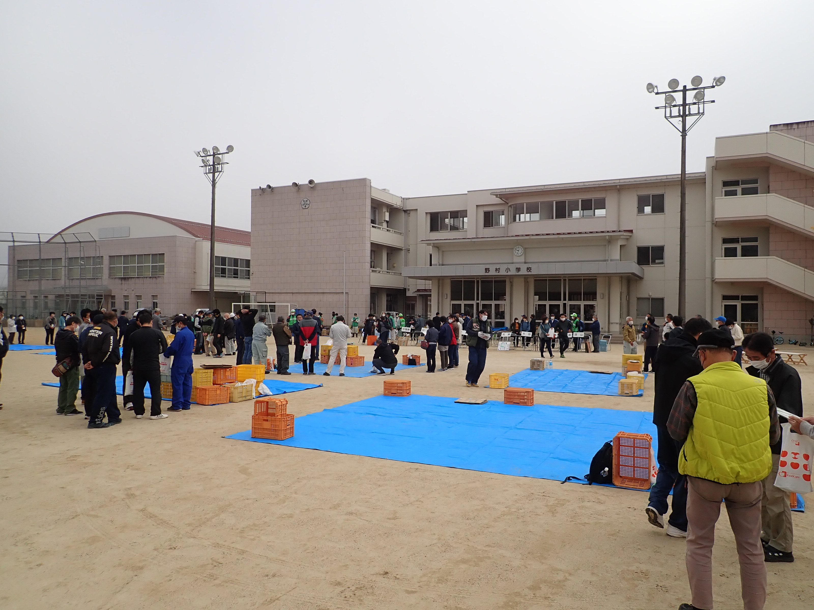
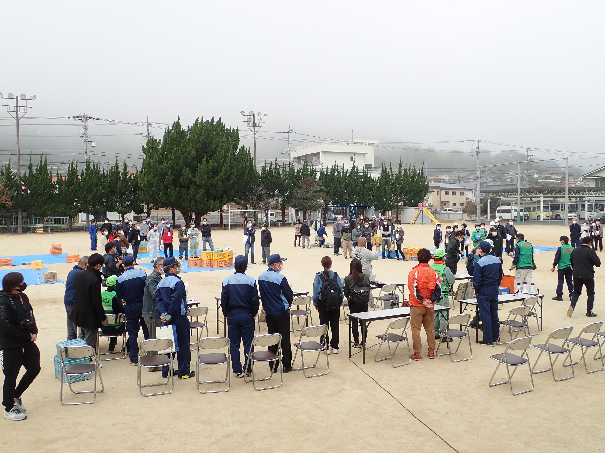
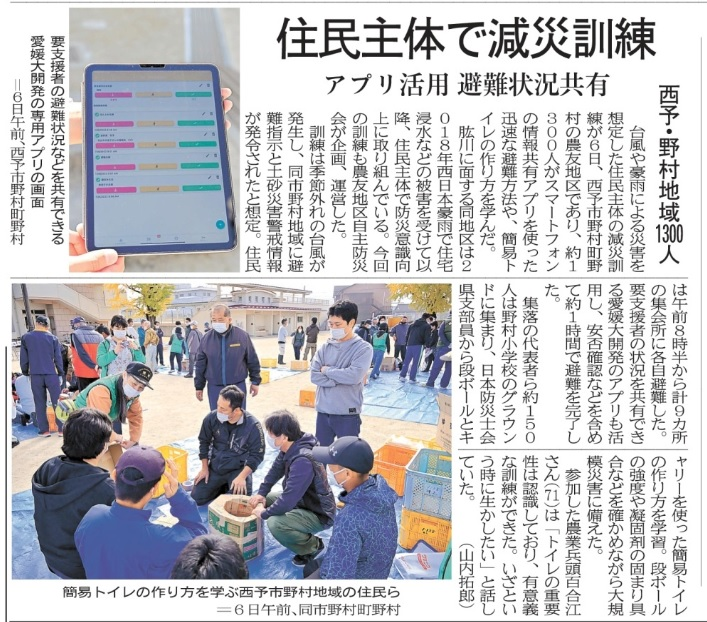
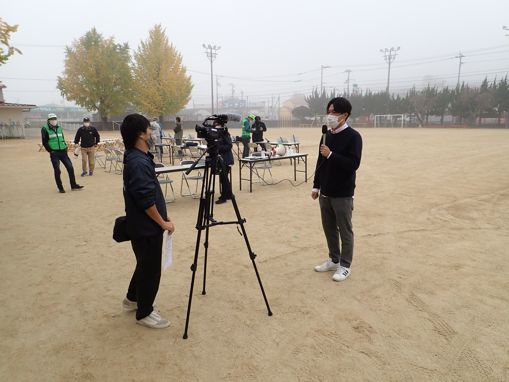

mizukan
イベント
野村町農友地区避難訓練
11月6日、西予市野村町農友地区で避難訓練があり、我が水工学研究室
で開発した、スマートフォン向け情報共有アプリが実際に使われました．


約1300人がスマートフォンでアプリを活用し、情報共有や安否確認など
をリアルタイムで確認でき、よりスムーズに訓練を行うことができました.

「住民全体で減災訓練」2022年11月7日付愛媛新聞記事
（掲載許可番号：d20221128-04）

西予CATVの取材も受けました（11月９日放送）
参加した方たちからは、情報共有アプリによって、それぞれの役割を明確に
することができ、要支援者の支援の進捗も分かりやすかった、と大好評でした.
文責 丸井